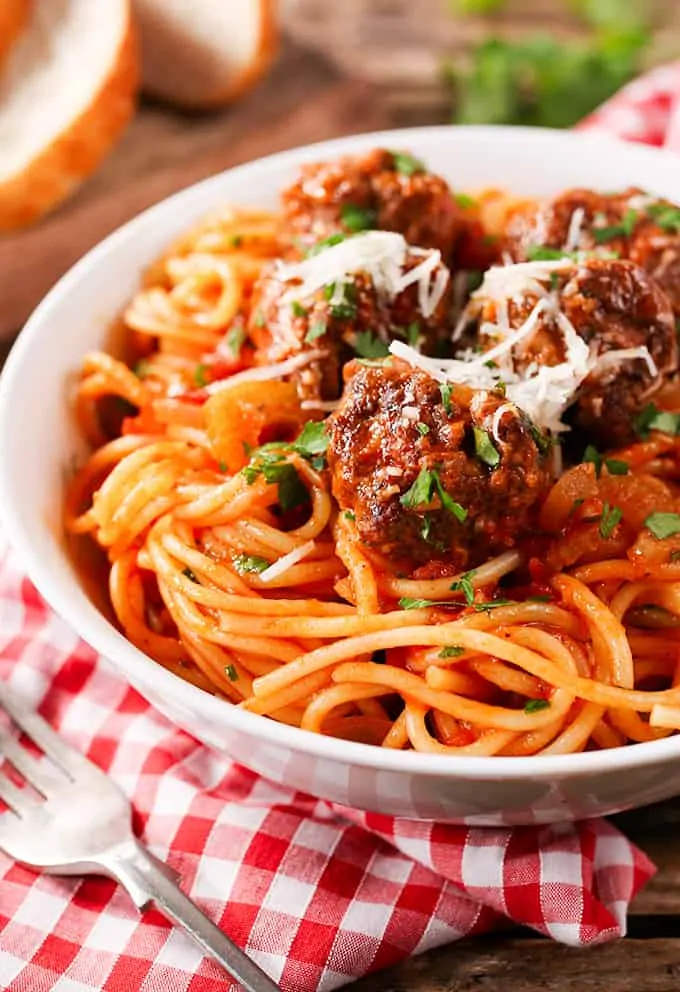

Spaghetti and Meatball

The classic feel-good dinner
It doesn't get more classic than the spaghetti and meatball. Hearty, timeless, and convenient to whip up. Below we're going to dive into the common ingredients we'll need for this dish.
Ingredients:
- Spaghetti
- Tomato sauce
- Butter
- Chopped onions
- Chopped garlic
- Eggs
- Flour
- Parmesan cheese
- Ground beef
Steps:
- Cook 60g of dry spaghetti in boiled water for 7 minutes, then drain the water accordingly.
- Add a stick of butter to a heated pan, then add chopped garlic onions.
- Add a can of tomato sauce and stir well before leaving it to simmer.
- In a mixing bowl, add ground beef, permasan, garlic, egg, flour, chili flakes, salt/pepper then mix by hand
- Heat a pan, and while you wait, shape the meatballs into desired sizes before setting them in an oiled pan to cook until completion.
- Combine the spaghetti, sauce, and meatballs and serve with desired garnish or additional permasan.